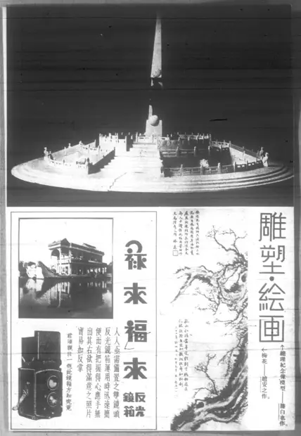

雕塑繪畫：總理紀念碑模型
访问原网页 ↗Visit original website ↗

S071 · 《東方雜誌》，商务印书馆；中国国家图书馆扫描 · 1936，33卷15期，扫描第30页
图版上方刊台基、台阶、栏杆及中央碑体，右下图注明署滕白也作。同页梅花另署赵安之。Scan page 30 reproduces a monument model and credits Teng as its maker. The adjacent plum painting is by Zhao Anzhi. Compare the monument photograph with Yi’s Figure 10.
馆藏图像与原文Archived images and documents
- 总理纪念碑模型，《东方杂志》1936年原页Teng’s memorial monument model, Eastern Miscellany, 1936 I051
- 南京新街口孙中山造像与基座模型，比较图版Nanjing statue and base models, comparative plate I052
- 总理纪念碑模型，封面及图版选页Eastern Miscellany, 1936: cover and monument plate D005


原始网址Original URL
https://commons.wikimedia.org/wiki/File:NLC404-01J002290-26112_%E6%9D%B1%E6%96%B9%E9%9B%9C%E8%AA%8C_1936%E5%B9%B433%E5%8D%B715%E6%9C%9F.pdf